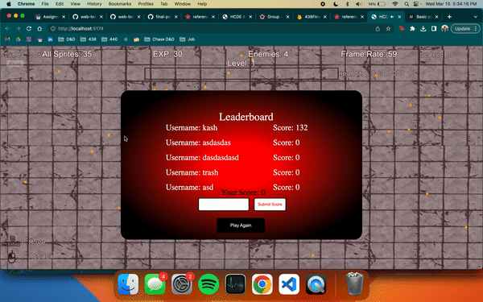

FP2 Writeup.
Overview and Usage
My 2D game, which can be found here, features a Sun celestial ninja who has the power to bend the elements of fire, earth, water, sun, and air. The ninja must defend against shadow warriors who are growing stronger and trying to attack the Sun itself. To fight these shadow warriors, the player can shoot sun orbs or slash a sun sword that damages enemies with the left mouse button and move around using the WASD keys. However, the player must be careful not to collide with the shadow warriors or get hit by their shadow balls, as this will cause damage. As the player defeats more enemies, they'll collect experience points that can be used to level up and become even more powerful. After every few levels, the player can choose to upgrade their bending abilities or their health, speed, or defense, which will help them defeat even more enemies and ultimately save the Sun from danger.

Development Process
Adding Different Enemies
Adding different enemies was a simple task, fortunately, since I already have an enemies group/class. For my new enemies, I wanted ones that were better at close range, and ones better at far range, so I started prototyping a few ideas.

I decided to add red enemies that run quickly and purples ones that can shoot shadow orbs at the player location. The coding of the fast melee enemies was easy to do, since it's almost a carbon copy of the existing enemies, but with more speed and different animations. The coding of the slow shooting enemies was also easy to do, since my sun orbs when clicking the left mouse button have the same interactions and physics.

Adding a Boss
The boss was a really cool addition. My initial idea was to have a large enemy that spawned every five minutes and it would charge at the player in intervals. This ended up being hard to do, since the logic of the charging is difficult to achieve when the location of the player updates frequently. Nevertheless, I got it completed with some fine tuning with the timing and speed to make it not too difficult.

Leaderboard/Score Tracker
To track scores, I had to learn firebase and follow the in class tutortial Hannah provided. From there, with some help from Arissa, I was able to get a working backend quickly. The main problem was that submitting scores and displaying scores occured outside the canvas, so it kind of ruined the flow of the game and appearance.

Though the backend worked, I wanted players to be able to see live updates of the database, so I added the snapshot function so that users could see their or others' scores populate the scoreboard if they made the top 5 in real time.

So, I needed to move everything to p5, which ended up taking a lot of time. I had to read the documentation about how to create, alter, append, and style HTML elements on the canvas. By playing around with the various functions and shower thinking about getting the scoreboard to look how I wanted, I was able to get it working.

Visual Update
I was nearing the end of the timeline and project, so I made a few last minute visual changes. One was an upgrade tracker. This was fairly easy to do, since there is a function in p5 to import images and place them on the canvas. I also decided to change the background images since I realized the images were eating up a lot of resources and didn't fit the theme as well as I envisioned.

Better UX
The last few changes I made were from asking friends to test and what they would want to improve about the gameplay. A few have mentioned that they would want to be able to hold down the mouse instead of having to click all the time, so that was easy to add with the mouseIsPressed built in p5 function. They also mentioned that the timer would run when they clicked off the page, so I added a document event listener to pause the game automatically when the page isn't being viewed.

Issue Deep-Dive
No major issues really occured during this phase of development. I feel that I have gotten very comfortable with both libraries and JavaScript. A few small things do come in mind though outside of coding. For example, balancing the game. I constantly have been changing values of upgrade damage/values, enemy health, enemy speed, and more to try and prevent overpowered things from happening, yet keeping the game enjoyable. I do expect people to find more issues in the future with certain mechanics, and balancing those will be even more difficult because of how large the code is and not knowing what approach to take to addressing the issue. I also ran into the issue of my music/sounds starting to become choppy. After some googling, I learned that it was a limitation of the p5 sound library and has been an issue since 2016. Because this issue has existed for so long, I don't expect them to fix it soon, so I removed any sounds that occur often such as pressing the left mouse button or collecting experience.
Ideas and Future
- Coins and Loot that can be Carried over into Future Games
- A Menu Page
- Multiplayer Co-op and/or Versus
- Improve Sword Swing Location Accuracy
- Update Water to not Block Player Health
- Contrast Enemies More
- Magnet Powerup
- Cleaner Code/File Management
Kudos
Quinton Ashley (creator of p5play and removed a bug by request)
Arissa Zheng (helped setup firebase)
Tim Chen (helped with deployment)